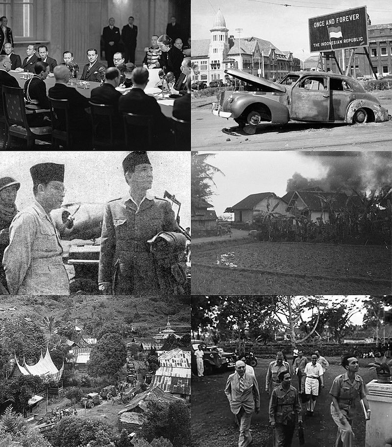

Sejarah
-
1 Maret 1942
Kedatangan Pasukan Jepang di Indonesia
Tanggal 1 Maret 1942, tentara Jepang mendarat di Pulau Jawa, dan tujuh hari kemudian pada tanggal 8 Maret 1942, pemerintah kolonial Hindia Belanda menyerah tanpa syarat kepada Kekaisaran Jepang berdasarkan Perjanjian Kalijati. Setelah penyerahan tanpa syarat tersebut, Pulau Jawa secara resmi diduduki oleh Jepang.
6 Agustus 1945
Proklamasi kemerdekaan
Tiga tahun kemudian, Jepang menyerah tanpa syarat kepada sekutu setelah dijatuhkannya bom atom oleh Amerika Serikat di Hiroshima tanggal 6 Agustus 1945 dan Nagasaki tanggal 9 Agustus 1945. Peristiwa itu terjadi pada tanggal 14 Agustus 1945 yang menyebabkan terjadinya kekosongan kekuasaan. Dalam kekosongan kekuasaan asing tersebut, Soekarno kemudian memproklamasikan kemerdekaan Indonesia pada tanggal 17 Agustus 1945.
15 September 1945
Kedatangan Pasukan Britania
Setelah kekalahan pihak Jepang, rakyat dan pejuang Indonesia berupaya melucuti senjata para tentara Jepang. Maka timbullah pertempuran-pertempuran yang memakan korban di banyak daerah. Ketika gerakan untuk melucuti pasukan Jepang sedang berkobar, tanggal 15 September 1945, pasukan Britania mendarat di Jakarta, kemudian mendarat di Surabaya pada tanggal 25 Oktober 1945. Tentara Britania datang ke Indonesia tergabung dalam AFNEI (Allied Forces Netherlands East Indies) atas keputusan dan atas nama Blok Sekutu, dengan tugas untuk melucuti senjata tentara Jepang, membebaskan para tawanan perang yang ditahan Jepang, serta memulangkan tentara kekaisaran Jepang ke negerinya. Namun selain itu tentara Britania yang datang juga membawa misi mengembalikan Indonesia kepada administrasi pemerintahan sipil Hindia Belanda sebagai negeri jajahan kolonial Belanda yang disebut NICA (Netherlands Indies Civil Administration).
9 November 1945
Semboyan Merdeka Atau mati
Ultimatum-ultimatum yang disebarkan melalui pamflet udara oleh tentara Inggris membuat rakyat Surabaya sangat marah. Nyaris seluruh sudut kota Surabaya dipenuhi pemuda dan kelompok bersenjata. Dalam ingatan Suhario alias Hario Kecik (Wakil Komandan Tentara Polisi Keamanan Rakyat), di sekitarnya berkumpul ratusan pemuda, semuanya membawa senjata dan pistol otomatis. Hario Kecik mengatakan bahwa mereka yang disebut tidak lengkap, membawa granat. Pertemuan pemuda dan kelompok bersenjata di Surabaya memutuskan mengangkat Sungkono sebagai Komandan Pertahanan Kota Surabaya dan mengangkat Surachman sebagai Komandan Pertempuran. Dari sini, muncul semboyan "Merdeka atau Mati" dan Sumpah Pejuang Surabaya sebagai berikut. Tetap Merdeka! Kedaulatan Negara dan Bangsa Indonesia yang diproklamirkan pada 17 Agustus 1945 akan kami pertahankan dengan sungguh-sungguh, penuh tanggungjawab bersama, bersatu, ikhlas berkorban dengan tekad: Merdeka atau Mati! Sekali Merdeka tetap Merdeka! — Surabaya, 9 November 1945, jam 18:46
Merdeka
Atoe
Mati !